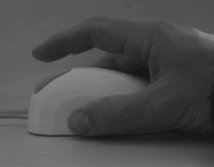
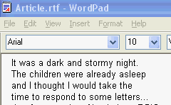

Mouse usage is the most common cause of discomfort among computer users.
Unfortunately, common solutions to mouse discomfort, such as switching hands or pointing devices, just move the repetitive strain to another part of your body.
The problem is that the constant gripping of a pointing device and the static postures, most devices encourage, can quickly cause fatigue.
AutoClick eliminates the need to click entirely, which also eliminates the need to grasp the mouse tightly and maintain problematic static postures.
|
 Typical static mousing posture |
Normally, you move the cursor around the screen and click on things.
When you enable AutoClick, you don't have to click anymore! Just move the cursor to where you want to click and pause. AutoClick will click the mouse for you after a brief, user-definable pause (for example, 6/10ths of a second).
You might worry that the mouse will click when you don't want it to. If you only move the mouse when you want to click on something, AutoClick only clicks when you want it to.
|
 |
To learn more about AutoClick, view the AutoClick video tutorial.
View Detailed AutoClick User Documentation